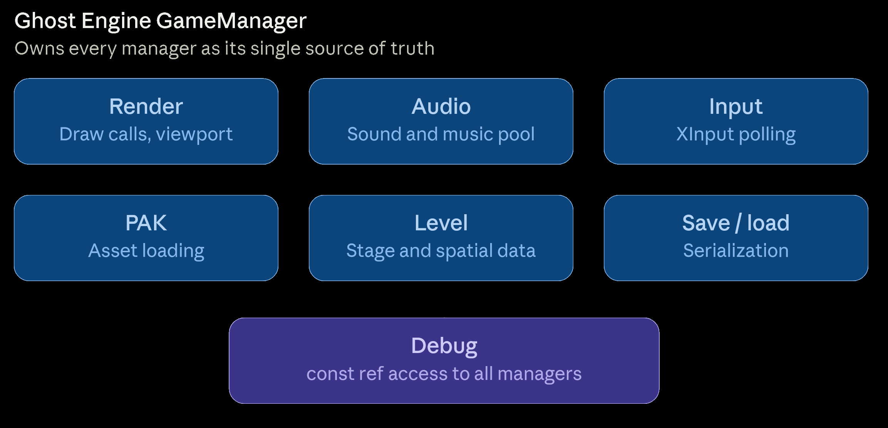
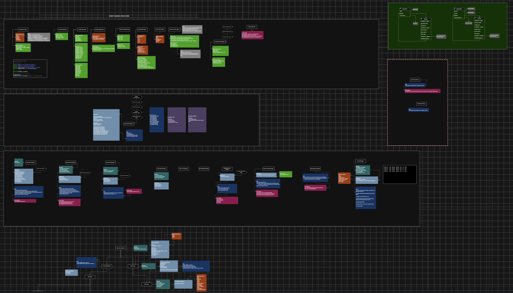
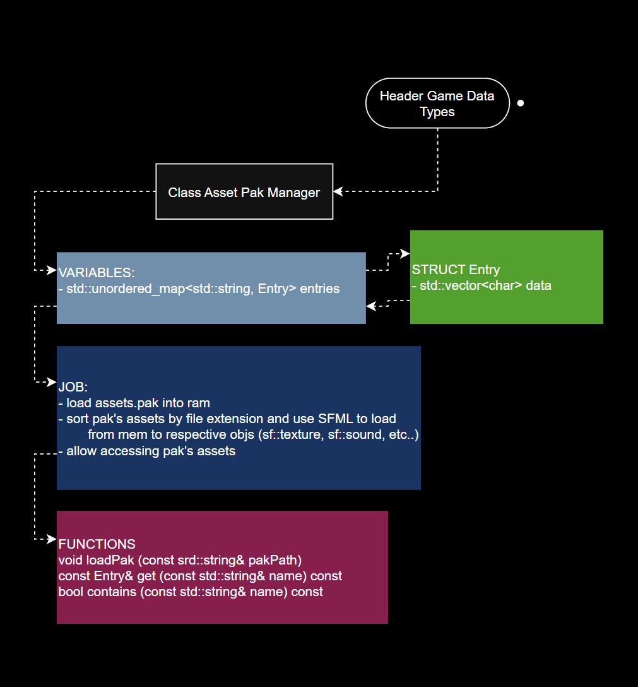
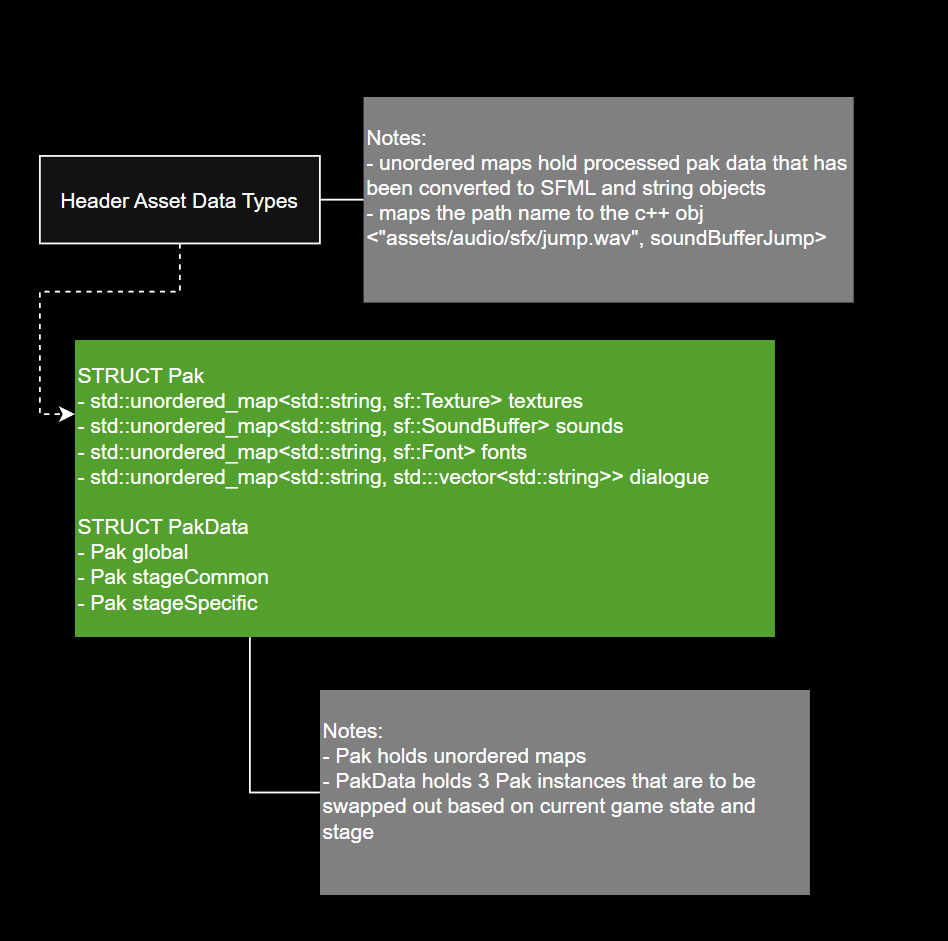

After years of learning and developing using Unity, Unreal Engine, GameMaker, and Godot, I've found myself wanting to undersatnd past the abstraction layer and work more directly with the engine. I craved a hightened control over what code is running in what order, what data is curently loaded in memory, and building games over top an optimized windows-based platform built around tighter, more stylized 2D experiences.
I began development by researching open-source libraries for graphics, audio, and gamepad input APIs. I decided on an combination of SFML 3.0+ and Microsoft's XInput. I chose SFML due to strong but simple rendering, audio, and keyboard input polling capabilities. And Microsoft XInput for its stronger compatibility and analog support for sticks and triggers with Xbox gamepads. From there I sketeched out the program's structure before moving onto full diagrams using Draw.io.

Ghost Engine is organized around a central GameManager that owns and orchestrates a set of subsystem managers: Render, Audio, Input, PAK, and Debug ( As of now ). Each manager is the single source of truth for its domain, and GameManager is the only object that owns them outright. Any other system that needs manager access receives it as a const&, never ownership or a mutable reference, so state can only be mutated through the owning manager. This keeps data flow one-directional and makes it obvious where any given piece of the state actually lives.
The Debugger is the one deliberate exception to my minimal access philosophy. It holds const references to every manager, since its job is to allow me to inspect and test. It can enumerate all currently loaded PAK assets ( textures, SFX, fonts, text files ) and can trigger test calls into Render, Audio, and Input to validate systems live, without ever being able to mutate them directly.

I wrote a custom binary asset-packing tool to bundle raw assets ( sprites, audio, fonts, dialogue text ) into .pak files for runtime loading, rather than shipping loose files. The packer reads a list of source files, filters out any that don't resolve on disk, and writes a simple length-prefixed binary format: a file count header followed by per-entry blocks of name length, filename, data length, and raw bytes. The tool also allows the developer to split assets into separate paks by scope, global, stage-common, and per-stage, allowing for greater control over what content is streamed in memory during runtime.


A standalone command line tool that serializes a list of asset files into a single custom binary pak. It writes a [count][nameLen][name][dataLen][data] layout per entry, reading each file's raw bytes via istreambuf_iterator and using the filename as the lookup key so Paks stay portable across directories. It gracefully skips missing files, adjusting the written count beforehand so the header stays accurate, and logs each packed file's size for quick sanity checks. This tool is the counterpart to AssetPakManager, forming the write side of the engine's asset pipeline.
// Comments removed for readability
// Code available on my GitHub page
// PAK format:
// [4 bytes] file count
// per file:
// [4 bytes] name length
// [N bytes] name (used as the lookup key e.g. "assets/tile.png")
// [8 bytes] data length
// [N bytes] raw data
void packFiles( const std::string& outPath, const std::vector & files ) {
std::ofstream out( outPath, std::ios::binary );
if ( !out ) {
std::cerr << "Failed to create: " << outPath << "\n";
return;
}
uint32_t count = static_cast ( files.size() );
for ( const auto& path : files ) {
std::ifstream in ( path, std::ios::binary );
if ( !in ) {
count --;
}
}
out.write( reinterpret_cast( &count ), sizeof( count ) );
for ( const auto& path : files ) {
std::ifstream in( path, std::ios::binary );
if ( !in ) {
std::cerr << "Skipping (not found): " << path << "\n";
continue;
}
std::vector data {
std::istreambuf_iterator ( in ),
std::istreambuf_iterator ()
};
std::filesystem::path fsPath ( path );
std::string fileName = fsPath.filename().string();
uint32_t nameLen = static_cast ( fileName.size() );
out.write( reinterpret_cast ( &nameLen ), sizeof ( nameLen ) );
out.write( fileName.data(), nameLen );
uint64_t dataLen = static_cast( data.size() );
out.write( reinterpret_cast ( &dataLen ) , sizeof ( dataLen ) );
out.write( data.data(), dataLen );
std::cout << "Packed: " << path << " ( " << dataLen << " bytes )\n";
}
std::cout << "\nDone -> " << outPath << "\nCount: " << count;
}
// Example Pakker program : creating 3 pak files
// Comments removed for readability
// Code available on my GitHub page
int main() {
packFiles("../../build/global-test.pak",
{
"../../assets-test/graphics/sprite-sheets/test.png",
"../../assets-test/audio/sfx/test.wav",
"../../assets-test/fonts/test.otf",
"../../assets-test/dialogues/test.txt",
"../../assets-test/nonExistant.png",
"../../assets-test/graphics/sprite-sheets/sprite-sheet.png",
"../../assets-test/audio/sfx/sfx.wav",
"../../assets-test/dialogues/intro.txt",
"../../assets-test/dialogues/stage1.txt"
} );
packFiles("../../build/stage-common-test.pak",
{
"../../assets-test/graphics/sprite-sheets/test.png",
"../../assets-test/audio/sfx/test.wav",
"../../assets-test/fonts/test.otf",
"../../assets-test/dialogues/test.txt",
"../../assets-test/nonExistant.png"
} );
packFiles("../../build/stage-0-test.pak",
{
"../../assets-test/graphics/sprite-sheets/test.png",
"../../assets-test/audio/sfx/test.wav",
"../../assets-test/fonts/test.otf",
"../../assets-test/dialogues/test.txt",
"../../assets-test/dialogues/intro.txt",
"../../assets-test/dialogues/stage1.txt",
"../../assets-test/graphics/stamp.jpg",
"../../assets-test/graphics/cher.jpg",
"../../assets-test/graphics/wifi.jpg",
"../../assets-test/graphics/folder.jpg"
} );
std::cout << "\nPress enter to close\n";
std::cin.get();
}
A runtime asset pipeline that loads packed binary files into memory and rebuilds them into typed engine objects. The load() function streams a custom binary pak format into a raw byte buffer keyed by filename, while the buildObjects() function sorts those entries by extension and constructs SFML textures, sound buffers, fonts, and parsed dialogue arrays directly from the in-memory data. Fonts get special handling, keeping a persistent raw buffer alive in the Pak struct since sf::Font doesn't own its source data. The result is a clean separation between raw pak I/O and typed asset construction, letting the engine load and unload entire paks at runtime without touching the filesystem again.
// Comments removed for readability
// Code available on my GitHub page
AssetPakManager::AssetPakManager()
{}
/* --- [ Overview ] ---------------------------------
[ void load ] takes in a string path, if pak file -> load all byte data into entries unordered map
[ void buildObjects ] takes in a pak struct -> writes the data in entries as C++ and SFML
objects organized into the pak struct's unordered maps
[ entries ] unordered map holding all currently loaded pak file byte data
--------------------------------------------------*/
void AssetPakManager::load( const std::string& pakPath ) {
std::cout << "CWD: " << std::filesystem::current_path() << std::flush;
std::cout << "Opening pak: " << pakPath << std::flush;
std::ifstream in( pakPath, std::ios::binary );
if ( !in ) {
std::cout << " -> FAILED TO OPEN" << std::flush;
throw std::runtime_error( "Cannot open pak: " + pakPath );
}
uint32_t count = 0;
in.read( reinterpret_cast( &count ), sizeof( count ) );
for ( uint32_t i = 0; i < count; i++ ) {
uint32_t nameLen = 0;
in.read( reinterpret_cast( &nameLen ), sizeof( nameLen ) );
std::string name(nameLen, '\0');
in.read(name.data(), nameLen);
uint64_t dataLen = 0;
in.read( reinterpret_cast( &dataLen ), sizeof( dataLen ) );
std::vector data( dataLen );
in.read( data.data(), dataLen );
entries[name] = { std::move( data ) };
}
}
void AssetPakManager::buildObjects( Pak& pak ) {
pak.textures.clear();
pak.sounds.clear();
pak.fonts.clear();
pak.dialogues.clear();
auto endsWith = []( const std::string& str, const std::string& suffix ) {
return str.size() >= suffix.size() &&
str.compare( str.size() - suffix.size(), suffix.size(), suffix ) == 0;
};
for ( const auto& [name, entry] : entries ) {
const void* ptr = entry.data.data();
size_t size = entry.data.size();
if ( endsWith( name, ".png" ) || endsWith( name, ".jpg" ) ) {
sf::Texture tex( ptr, size );
pak.textures[ name ] = std::move( tex );
std::cout << "Added " << name << " to textures map." << std::endl;
} else if ( endsWith( name, ".wav" ) || endsWith( name, ".ogg" ) ) {
sf::SoundBuffer buf( ptr, size );
pak.sounds[ name ] = std::move( buf );
} else if ( endsWith( name, ".ttf" ) || endsWith( name, ".otf" ) ) {
pak.rawFontBuffers[ name ] = entry.data;
const void* ptr = pak.rawFontBuffers[ name ].data();
size_t size = pak.rawFontBuffers[ name ].size();
sf::Font font( ptr, size );
font.setSmooth( false );
pak.fonts[ name ] = std::move( font );
std::cout << "Added " << name << " to fonts map." << std::endl;
} else if ( endsWith( name, ".txt" ) ) {
std::vector dialogueEntry;
std::string rawText( entry.data.begin(), entry.data.end() );
std::istringstream stream( rawText );
std::string line;
while ( std::getline( stream, line ) ) {
if ( !line.empty() && line.back() == '\r' ) {
line.pop_back();
}
if ( !line.empty() ) {
dialogueEntry.push_back( std::move( line ) );
}
}
pak.dialogues[ name ] = std::move( dialogueEntry );
std::cout << "Added " << name << " to dialogue map." << std::endl;
}
}
entries.clear();
}
const AssetPakManager::Entry& AssetPakManager::get( const std::string& name ) const {
auto entry = entries.find( name );
if ( entry == entries.end() ) {
throw std::runtime_error( "Asset not found in pak: " + name );
}
return entry -> second;
}
bool AssetPakManager::has( const std::string& name ) const {
return entries.count( name ) > 0;
}